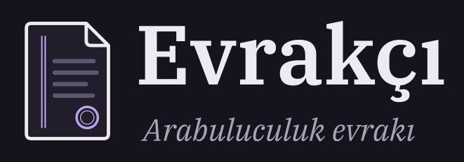
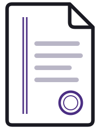

Marka rehberi
Evrakçı, arabulucuların bir dosyanın bütün evrakını tek formdan hazırladığı masaüstü uygulamasıdır. Marka resmî kâğıdın diliyle konuşur: düzenli, ağırbaşlı, güvenilir. Bu sayfa logonun, renklerin ve yazı tiplerinin nasıl kullanılacağını anlatır.
Logo
İşaret bir dilekçe kâğıdıdır: katlanmış köşe, solda çift kenar boşluğu çizgisi, yazı satırları ve altta mühür. Her arabuluculuk dosyasının sonunda imzalanıp mühürlenen bir kâğıt vardır; Evrakçı o kâğıdı hazırlar. Yanındaki ad IBM Plex Serif ile yazılır, altındaki “Arabuluculuk evrakı” eğik yazıyla.

Küçük boyutlar
32 piksel ve altında ayrıntılar kaybolur. Bu boyutlarda logo-isaret-kucuk.svg kullanılır: daha kalın çizgiler, tek kenar çizgisi, iki satır ve iç halkası olmayan bir mühür. Uygulama simgesi evrakci.ico her boyutu doğru çizimle içerir.

96 pxYapın
- Logoyu dosyalardaki hâliyle kullanın.
- Çevresinde en az kâğıdın yarı genişliği kadar boşluk bırakın.
- Adı her zaman Evrakçı diye yazın: büyük E, Türkçe ç ve ı ile.
Yapmayın
- Renkleri değiştirmeyin; gölge, parlama ya da renk geçişi eklemeyin.
- Logoyu esnetmeyin, döndürmeyin, kâğıdı başka bir biçime sokmayın.
- “Evrakci”, “EVRAKÇI” ya da “Evrak-çı” yazmayın. (Dosya adlarındaki
Evrakciyalnızca teknik bir zorunluluktur.)
Renkler
Mühür Moru tek vurgu rengidir: logo çizgileri, ana düğme, seçili sekme, adım işaretleri. Geri kalan her şey mürekkep ve kâğıt tonlarıdır. Metin ile zemin arasındaki karşıtlık en az 4.5:1'dir; yaşlı kullanıcılar da rahat okur.
| Ad | Değer | Kullanım | |
|---|---|---|---|
| Mühür Moru | #4B2E83 | Vurgu, ana düğme, logo. Üstündeki yazı beyazdır (10.4:1). | |
| Gece Moru | #6A4FB3 | Koyu temada düğme dolgusu (beyaz yazıyla 6.2:1). | |
| Lila | #B9A7EC | Koyu temada vurgulu yazı ve logo çizgileri. | |
| Mürekkep | #1A1A22 | Gövde metni, logodaki ad ve kâğıt kenarı. | |
| Kurşun | #5E6270 | Açıklamalar, ikincil metin. | |
| Masa | #EEEEF2 | Pencere zemini; üstünde beyaz kâğıt (içerik alanı) durur. | |
| Gece | #16131D | Koyu tema zemini. |
Belge önizlemesindeki sayfalar her temada beyaz kalır ve Times New Roman ile çizilir; mahkeme ve UYAP alışkanlığı budur.
Yazı tipleri
İki aileden oluşur ve ikisi de uygulamanın içine gömülüdür (SIL Open Font License; ticari kullanım serbest). Başlıklar dilekçe başlığı gibi tırnaklı, arayüz metni sade ve okunaklıdır.
| Kullanım | Örnek | Yazı tipi ve boyut |
|---|---|---|
| Ekran başlığı | Dosyanın türünü seçin | IBM Plex Serif, yarı kalın, 32 |
| Bölüm başlığı | Tutanak bilgileri | IBM Plex Serif, yarı kalın, 26 |
| Gövde | Bu dosyada hangi tutanaklar hazırlanacak? | IBM Plex Sans, normal, 15–16 |
| Açıklama | Boş bırakılırsa “Başvuru tarihi” ile aynı olur. | IBM Plex Sans, normal, 14–15, Kurşun |
Arayüz ilkeleri
Kâğıt ve masa
Pencere bir masadır, içerik alanı onun üstündeki beyaz kâğıttır. Kâğıdın solunda logodaki çift kenar çizgisi durur; markanın arayüzde tekrar eden tek süsü budur. Başka çerçeve, gölge ya da renk geçişi eklenmez.
Okunur
En küçük yazı 13 punto, form etiketleri 16 punto. Soluk gri yazı kullanılmaz.
Yazılı düğmeler, büyük hedefler
Önemli düğmelerde simgenin yanında yazı vardır (“Boş bırak”, “Hatırla”). Düğme ve kutular en az 40 piksel yüksekliktedir. Bir ekranda tek bir mor (ana) düğme bulunur.
Belgeleri üretGeri
Adım adım
İş dört adımda ilerler; kullanıcı her an nerede olduğunu ve sırada ne olduğunu görür.
Dil ve üslup
Böyle yazın
- Kısa, düz cümleler: “Tutanakları işaretleyin.”
- “Siz” diye hitap edin.
- Hukuki terimleri doğru kullanın: tutanak, son tutanak, anlaşma belgesi.
Kaçının
- Teknik terimler: “şablon değişkeni”, “dosya formatı” yerine “bilgi”, “Word / UYAP”.
- Abartılı vaatler; hukuki doğruluk her zaman önce gelir.
Kısa tanıtım
Evrakçı, arabuluculuk dosyanızın davet mektubundan son tutanağına kadar bütün evrakını tek formdan, Word ve UYAP biçiminde hazırlar. İnternet gerektirmez; bilgileriniz bilgisayarınızdan çıkmaz.